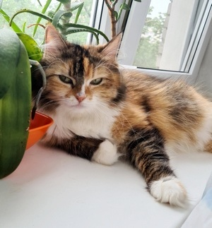

ДОМАШНИЙ ПИТОМЕЦ
Кошка по кличке Цири
Самая красивая и умная кошка в мире. Возраст — почти 6 лет.
Фотографироваться не очень любит.

Характер Цири
Тип характера — Охотник.
Охотники — прирожденные мастера преследования и ловли добычи. Основные характеристики:
развитый навык охоты,
наличие особого оружия: острые когти и клыки,
навык терпеливого наблюдателя,
очень мягкие ступни с кожаными подушечками для бесшумного передвижения,
шикарные вибриссы.
Кошка норовистая, своенравная. В нашей семье есть шуточное предположение, что её предком был
камышовый кот.
Самая подходящая профессия для Цири — это КОШКА-МЫШЕЛОВ.